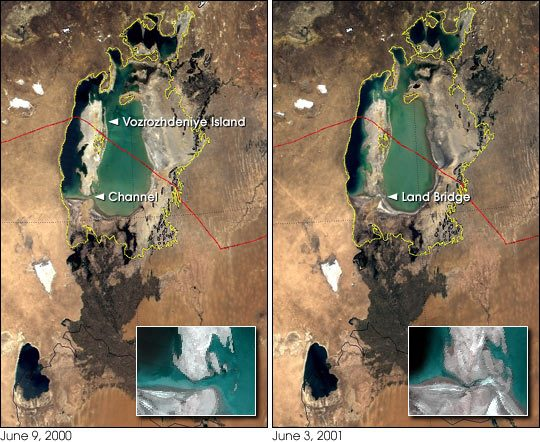

FILE SOVIET/ARAL/BIOWEAPONS // 1930s–1992
Vozrozhdeniye Island Biological Weapons Site
The Soviet Union operated a biological weapons test site on Vozrozhdeniye Island. A 2002 cleanup addressed contaminated anthrax burial sites; present danger claims require current sampling, not Cold War history alone.


CASE ANALYSIS
What the record supports
CLAIM AND BOUNDARY
The Soviet Union operated a biological weapons testing site on Vozrozhdeniye Island in the Aral Sea. Historical testing of anthrax, plague, and other agents is documented. Claims of an active outbreak or uncontrolled release today need environmental and epidemiological evidence beyond the site’s secret past.
CHRONOLOGY AND CONTEXT
The island served as a Soviet test center and expanded during the Cold War. Tests involved animals and open-air releases under military programs. Following the Soviet collapse the site was abandoned. A U.S.-funded remediation project in 2002 buried contaminated materials at known locations amid concern about changing geography.
DOCUMENTARY EVIDENCE
Soviet records, defectors, U.S. assessments, and scientific reporting document the facility. CDC and U.S.-Uzbek officials described remediation at anthrax burial sites. These sources establish weapons testing and residual contamination, but the cleanup covered surveyed locations rather than proving every part of the island safe.
CONTRARY EVIDENCE AND ALTERNATIVES
Officials reported no continuing release at inspected sites after remediation. That does not mean every location was comprehensively tested. Conversely, a history of weapons testing does not establish that viable pathogens are currently spreading or causing nearby disease. Current risk and historic capability are separate questions.
UNCERTAINTY
Access and long-term environmental monitoring are limited; agent quantities and test locations remain uncertain. The Aral Sea’s geography changed and affects access. Dramatic ‘death island’ claims should be checked against current sampling and epidemiology rather than repeated from Cold War accounts.
CALIBRATED ASSESSMENT
The test site and historical weapons research are documented. A current uncontrolled threat is not established by that history alone. The appropriate conclusion is that legacy contamination warranted cleanup and monitoring, while present risk must be judged from contemporary environmental evidence.
WHAT WOULD CHANGE THIS
Independent sampling of soil, water, and air with public methods could refine current risk. Soviet operational logs could locate additional hotspots. A viable agent detection would alter the assessment; an old program or missing archive cannot substitute for present testing.
DOCUMENT TRAIL
Sources & limitations
- CDC, Vozrozhdeniye remediationPublic-health report documents 2002 cleanup of surveyed sites, not every possible location.
- Nuclear Threat Initiative, Soviet programIndependent nonproliferation analysis summarizes historical evidence and uncertainties.
- State Department, Biological Weapons ConventionTreaty context frames verification limits; it is not a site-specific environmental report.